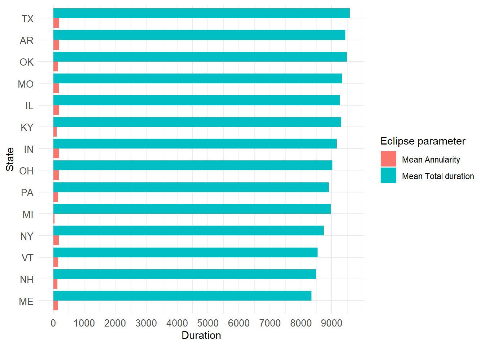

── Conflicts ────────────────────────────────────────── tidyverse_conflicts() ──
✖ dplyr::filter() masks stats::filter()
✖ dplyr::lag() masks stats::lag()
ℹ Use the conflicted package (<http://conflicted.r-lib.org/>) to force all conflicts to become errors
Registered S3 method overwritten by 'GGally':
method from
+.gg ggplot2
Data Processing and Exploratory analysis
Load the data set. Given that this dataset contains full and partial eclipse data from both events (2023 and 2024), they were assigned to four different data frames. Then checking the structure of the data frames.
#Load the complete datasettuesdata <- tidytuesdayR::tt_load('2024-04-09')
--- Compiling #TidyTuesday Information for 2024-04-09 ----
--- There are 4 files available ---
--- Starting Download ---
Downloading file 1 of 4: `eclipse_annular_2023.csv`
Downloading file 2 of 4: `eclipse_total_2024.csv`
Downloading file 3 of 4: `eclipse_partial_2023.csv`
Downloading file 4 of 4: `eclipse_partial_2024.csv`
--- Download complete ---
#Assign the dataset to data frameseclipse_annular_2023 <- tuesdata$eclipse_annular_2023eclipse_total_2024 <- tuesdata$eclipse_total_2024eclipse_partial_2023 <- tuesdata$eclipse_partial_2023eclipse_partial_2024 <- tuesdata$eclipse_partial_2024#Check the structure of the data frames, using different methodsstr(eclipse_partial_2024)
Now, I determined the duration of annularity or totality for the eclipse_annular_2023 and eclipse_total_2024. Also, determined the beginning of the eclipse in all data frames, which represents the time at first and last contact of the moon with the sun.
# Estimate the total duration and annularity duration (in seconds) for the `eclipse_annular_2023` dfeclipse_annular_2023 <- eclipse_annular_2023 %>%mutate(total_duration =as.numeric(eclipse_6 - eclipse_1),annularity_duration =as.numeric(eclipse_4 - eclipse_3))# Estimate the total duration and annularity duration (in seconds) for the `eclipse_total_2024` dfeclipse_total_2024 <- eclipse_total_2024 %>%mutate(total_duration =as.numeric(eclipse_6 - eclipse_1),annularity_duration =as.numeric(eclipse_4 - eclipse_3))# Estimate the total duration (in seconds) for the `eclipse_partial_2023` dfeclipse_partial_2023 <- eclipse_partial_2023 %>%mutate(total_duration =as.numeric(eclipse_5 - eclipse_1))# Estimate the total duration (in seconds) for the `eclipse_partial_2024` dfeclipse_partial_2024 <- eclipse_partial_2024 %>%mutate(total_duration =as.numeric(eclipse_5 - eclipse_1))
Now estimate the average total duration and annularity by state, for each eclipse
#Estimate the mean, min and max total duration and annularity duration from each one of the eclipsessummary_eclipse_annular_2023 <- eclipse_annular_2023 %>%#Annular eclipse 2023group_by(state) %>%summarise(mean_total_duration_2023 =mean(total_duration), mean_annularity_duration_2023 =mean(annularity_duration),min_total_duration_2023 =min(total_duration),min_annularity_duration_2023 =min(annularity_duration),max_total_duration_2023 =max(total_duration), max_annularity_duration_2023 =max(annularity_duration))summary_eclipse_total_2024 <- eclipse_total_2024 %>%#Total eclipse 2024group_by(state) %>%summarise(mean_total_duration_2024 =mean(total_duration), mean_annularity_duration_2024 =mean(annularity_duration),min_total_duration_2024 =min(total_duration), min_annularity_duration_2024 =min(annularity_duration),max_total_duration_2024 =max(total_duration), max_annularity_duration_2024 =max(annularity_duration))summary_eclipse_partial_2023 <- eclipse_partial_2023 %>%#Partial eclipse 2023group_by(state) %>%summarise(mean_total_duration_2023 =mean(total_duration),min_total_duration_2023 =min(total_duration),max_total_duration_2023 =max(total_duration))summary_eclipse_partial_2024 <- eclipse_partial_2024 %>%#Partial eclipse 2024group_by(state) %>%summarise(mean_total_duration_2024 =mean(total_duration),min_total_duration_2024 =min(total_duration),max_total_duration_2024 =max(total_duration))
Make plots to visualize the mean total duration and mean annularity by state. First, to the total eclipse from 2024.
# Arrange the data by mean_total_duration in descending ordersummary_eclipse_total_2024 <- summary_eclipse_total_2024 %>%arrange(desc(mean_total_duration_2024))# Reshape the data to long format for ggplotlong_eclipse_total_2024 <- summary_eclipse_total_2024 %>%select(state, mean_total_duration_2024, mean_annularity_duration_2024) %>%pivot_longer(cols =c(mean_total_duration_2024, mean_annularity_duration_2024), names_to ="parameter", values_to ="duration")# Create the plotggplot(long_eclipse_total_2024, aes(x =reorder(state, duration), y = duration, fill = parameter)) +geom_bar(stat ="identity", position ="dodge") +coord_flip() +# Flip coordinates to make horizontal barsscale_y_continuous(breaks =seq(0, max(long_eclipse_total_2024$duration), by =1000)) +#Change the x-scalelabs(x ="State", y ="Duration", fill ="Parameter") +theme_minimal()+scale_fill_discrete(name="Eclipse parameter", labels =c("Mean Annularity", "Mean Total duration"))+theme(axis.text =element_text(size =10))

Now plotting the visualization of duration of the eclipse to the annular eclipse from 2023
# Arrange the data by mean_total_duration in descending ordersummary_eclipse_annular_2023 <- summary_eclipse_annular_2023 %>%arrange(desc(mean_total_duration_2023))# Reshape the data to long format for ggplotlong_eclipse_annular_2023 <- summary_eclipse_annular_2023 %>%select(state, mean_total_duration_2023, mean_annularity_duration_2023) %>%pivot_longer(cols =c(mean_total_duration_2023, mean_annularity_duration_2023), names_to ="parameter", values_to ="duration")# Create the plotggplot(long_eclipse_annular_2023, aes(x =reorder(state, duration), y = duration, fill = parameter)) +geom_bar(stat ="identity", position ="dodge") +coord_flip() +# Flip coordinates to make horizontal barsscale_y_continuous(breaks =seq(0, max(long_eclipse_annular_2023$duration), by =1000)) +labs(x ="State", y ="Duration", fill ="Parameter") +theme_minimal()+scale_fill_discrete(name="Eclipse parameter", labels =c("Mean Annularity", "Mean Total duration"))+theme(axis.text =element_text(size =10))
Now also plotting the 2023 and 2024 partial eclipse data:
# Arrange the data by mean_total_duration in descending ordersummary_eclipse_partial_2023 <- summary_eclipse_partial_2023 %>%arrange(desc(mean_total_duration_2023))# Reshape the data to long format for ggplotlong_eclipse_partial_2023 <- summary_eclipse_partial_2023 %>%select(state, mean_total_duration_2023) %>%pivot_longer(cols = mean_total_duration_2023, names_to ="parameter", values_to ="duration")# Create the plotggplot(long_eclipse_partial_2023, aes(x =reorder(state, duration), y = duration)) +geom_bar(stat ="identity", position ="dodge") +scale_y_continuous(breaks =seq(0, max(long_eclipse_partial_2023$duration), by =1000)) +labs(x ="State", y ="Duration") +theme_minimal()+theme(axis.text =element_text(size =8))
In my opinion, this data is interesting but by itself, we cannot use to make much inferences. In this case, I decided to include the information about the total area (in sq. miles) of each state, and the total population and try to answer the following question/hypothesis:
Can I predict the state total duration of the partial eclipse based on the area and population?
I searched for the area of each US state and I found them on a Github repository online: https://github.com/jakevdp/data-USstates/blob/master/state-areas.csv. Here, I downloaded the state-areas.csv and state-abbrevs.csv files.
I also searched the total population by each state and found an excel file that I transformed to .csv and also did some manual editting in excel to remove the headers (sorry if I didn’t do it in R :)). This file was obtained from the US Census bureau website here: https://www.census.gov/data/tables/time-series/demo/popest/2020s-state-detail.html
Open the files and perform some data cleaning. Basically, I merged the state abbreviations into their state names and area.
#load the states data filesusstates <-read_csv(here("tidytuesday-exercise", "data", "raw-data", "state-areas.csv"))
Rows: 52 Columns: 2
── Column specification ────────────────────────────────────────────────────────
Delimiter: ","
chr (1): state
dbl (1): area (sq. mi)
ℹ Use `spec()` to retrieve the full column specification for this data.
ℹ Specify the column types or set `show_col_types = FALSE` to quiet this message.
Rows: 51 Columns: 2
── Column specification ────────────────────────────────────────────────────────
Delimiter: ","
chr (2): state, abbreviation
ℹ Use `spec()` to retrieve the full column specification for this data.
ℹ Specify the column types or set `show_col_types = FALSE` to quiet this message.
Rows: 52 Columns: 3
── Column specification ────────────────────────────────────────────────────────
Delimiter: ","
chr (1): state
num (2): total_population, adult_population
ℹ Use `spec()` to retrieve the full column specification for this data.
ℹ Specify the column types or set `show_col_types = FALSE` to quiet this message.
#Join both dfs using `left_join()`usareas <-left_join(usstates, abbrevs)
Joining with `by = join_by(state)`
#Check the df, and see if there are any missing valuesgg_miss_var(usareas)
The abbreviation of Puerto Rico is missing, so I came up with a piece of code to fix it:
# Replace NA with "PR" in the first occurrencefor (col in1:ncol(usareas)) { na_index <-which(is.na(usareas[, col]))if (length(na_index) >0) { usareas[na_index[1], col] <-"PR" }}#Check again if the missing value was replacedgg_miss_var(usareas)
#Also, rename the variable that has the area of each stateusareas <- usareas %>%rename(area =`area (sq. mi)`)
Now, doing data cleaning in the US population file before merging:
#Delete the . character from the state variable and calculate the young_population variableuspop <- uspop %>%mutate(state =str_replace(state, "^\\.", ""),young_population = total_population - adult_population)
Now merging the population and area files:
#Join population and area dataframesus_areapop <-full_join(usareas, uspop, by="state")#Rename the abbreviaton to 'state' and the state variable to 'name'us_areapop <- us_areapop %>%rename(name="state", state="abbreviation")
And then, merging the us_areapop, summary_eclipse_partial_2023 and summary_eclipse_partial_2024 dataframes.
#First join the eclipse data framespartial_eclipse <-full_join(summary_eclipse_partial_2023, summary_eclipse_partial_2024, by="state")#Then, joining the partial eclipse data frames to the `us_areapop` df.partial_eclipse <-full_join(partial_eclipse, us_areapop, by="state")#Save the file as .RDSwrite_rds(partial_eclipse, here("tidytuesday-exercise","data", "processed-data", "partial_eclipse.rds"))
I explored the distribution of the predictors (area and population) and the outcome (duration of the partial eclipse), so I get to decide what type of models will be tested.
#Area by stateggplot(partial_eclipse, aes(x= area))+geom_histogram(fill="aquamarine3", color="red")+labs(x="US states Area (in sq miles)")
`stat_bin()` using `bins = 30`. Pick better value with `binwidth`.
#Population by stateggplot(partial_eclipse, aes(x= total_population))+geom_histogram(fill="aquamarine3", color="red")+labs(x="Population by state")
`stat_bin()` using `bins = 30`. Pick better value with `binwidth`.
#Eclipse durationggplot(partial_eclipse, aes(x= mean_total_duration_2024))+geom_histogram(fill="aquamarine3", color="red")+labs(x="Partial eclipse duration (in seconds)")
`stat_bin()` using `bins = 30`. Pick better value with `binwidth`.
Then, I explored correlations between the outcome and the variables I plan to test in the models:
The data does not appear to follow normality, so it could be better to implement a model that uses the gamma distribution. However, I will also use a linear model with normal distributions just for the goals of this exercise. Also, it seems like there is moderate correlation between area and duration of the eclipse.
Data Analysis/Modeling
For model evaluation, I used mean_total_duration from either 2023 or 2024 as the outcome and area, adult_population and young_population as predictors. I decided to test the following types of models:
Linear regression model.
GLM gamma distributed model
Random forest model
First, I will split the data into 70% train and 30% test. Then computing each model and their predictions. Finally computing the metrics.
# Split the data into training and testing setsrngseed =1234set.seed(rngseed) # for reproducibilitydata_split <-initial_split(partial_eclipse, prop =0.7)train_data <-training(data_split)test_data <-testing(data_split)#Create formulaeclipse_formula <- mean_total_duration_2024 ~ area + adult_population + young_population## ----Model 1---- ##lin_mod <-linear_reg() %>%set_engine("lm") #Model specificationlin_wflow <-workflow() %>%#Workflowadd_model(lin_mod) %>%add_formula(eclipse_formula)lin_fit <- lin_wflow %>%fit(data = train_data) #Fit the model## ----Model 2---- ##glm_mod <-linear_reg(mode ="regression") %>%#Model specificationset_engine("glm", family =Gamma(link ="log"))glm_wflow <-workflow() %>%#Workflowadd_model(glm_mod) %>%add_formula(eclipse_formula)glm_fit <- glm_wflow %>%fit(data = train_data) #Fit the model## ----Model 3---- ##rf_mod <-rand_forest(mode ="regression") %>%#Model specificationset_engine("ranger", seed = rngseed)rf_wflow <-workflow() %>%#Workflowadd_model(rf_mod) %>%add_formula(eclipse_formula)rf_fit <- rf_wflow %>%fit(data = train_data)#Compute the predictionslin_pred <- lin_fit %>%predict(train_data)glm_pred <- glm_fit %>%predict(train_data)rf_pred <- rf_fit %>%predict(train_data)#Compute the metricslin_metrics <-bind_cols(train_data, lin_pred) %>%metrics(truth = mean_total_duration_2024, estimate = .pred) glm_metrics <-bind_cols(train_data, glm_pred) %>%metrics(truth = mean_total_duration_2024, estimate = .pred)rf_metrics <-bind_cols(train_data, rf_pred) %>%metrics(truth = mean_total_duration_2024, estimate = .pred)#Print the metricsprint(lin_metrics)
# A tibble: 3 × 3
.metric .estimator .estimate
<chr> <chr> <dbl>
1 rmse standard 878.
2 rsq standard 0.716
3 mae standard 594.
print(glm_metrics)
# A tibble: 3 × 3
.metric .estimator .estimate
<chr> <chr> <dbl>
1 rmse standard 1437.
2 rsq standard 0.486
3 mae standard 1111.
print(rf_metrics)
# A tibble: 3 × 3
.metric .estimator .estimate
<chr> <chr> <dbl>
1 rmse standard 955.
2 rsq standard 0.732
3 mae standard 564.
#Plot observed vs predicted#Create dataframes to compute the plotspred1 <-data.frame(predicted = lin_pred$.pred, model ="linear")pred2 <-data.frame(predicted = glm_pred$.pred, model ="GLM")pred3 <-data.frame(predicted = rf_pred$.pred, model ="RF")#Merge data framesplot_data <-bind_rows(pred1, pred2, pred3) %>%mutate(observed =rep(train_data$mean_total_duration_2024,3)) #Create pred-obs plotggplot(plot_data) +geom_point(aes(x = observed, y = predicted, color = model, shape = model), size=3) +labs(x ="Observed", y ="Predicted", title ="Predicted vs Observed Plot") +geom_abline(intercept =0, slope =1, linetype ="dashed", color ="black") +theme_minimal()
I was almost certain that the GLM gamma regression model was going to perform better than the other two. Based on the observed vs predicted values plot and the metrics, I choose the Random forest model as the best. My selection for this model was heavily influenced by the R-square value and the MAE, but also because I was interested into learning more about Random forest models.
Finally, I will do one final performance evaluation by plotting the observed vs predicted values using the test_data and also computing the metrics.
#Fit the model using the test datarf_fit2 <- rf_wflow %>%fit(data = test_data)#Make predictions in the test datapreds2 <- rf_fit2 %>%predict(test_data)#Compute the metricsrf_metrics2 <-bind_cols(test_data, preds2) %>%metrics(truth = mean_total_duration_2024, estimate = .pred)print(rf_metrics2)
# A tibble: 3 × 3
.metric .estimator .estimate
<chr> <chr> <dbl>
1 rmse standard 759.
2 rsq standard 0.560
3 mae standard 500.
#Create df with new predictionsplot_test <- preds2 %>%mutate(observed =rep(test_data$mean_total_duration_2024, 1)) %>%rename(predicted = .pred)#Bind dfsfinal_plot_data <-bind_rows("train"=filter(plot_data, model =="RF"),"test"= plot_test,.id ="set") %>%tibble() %>%select(-model)#Plot observed vs predictedggplot(final_plot_data) +aes(x = observed, y = predicted, color = set, shape = set) +geom_point(size=3) +labs(x ="Observed", y ="Predicted", title ="Predicted vs Observed Values") +geom_abline(intercept =0, slope =1, linetype ="dashed", color ="black") +theme_minimal()+coord_fixed(ratio =1)
#I will pull out the results of the linear regression model to have an idea of the trend followed by the dataresults <- lin_fit %>%pull_workflow_fit() %>%tidy()
Warning: `pull_workflow_fit()` was deprecated in workflows 0.2.3.
ℹ Please use `extract_fit_parsnip()` instead.
#Calculate residuals and create data frameresiduals <-data.frame(Observation =1:36,Residuals = (train_data$mean_total_duration_2024 - rf_pred$.pred))# Plot residuals using ggplotggplot(residuals, aes(x = Observation, y = Residuals)) +geom_point(color ="steelblue", size =3) +geom_abline(intercept =0, slope =0, linetype ="dashed", color ="black") +labs(title ="Residuals Plot",x ="Observation",y ="Residuals")
Upon checking the model in the test data, it seems like the model still fits and was able to predict closely to the observed values. The residuals look somewhat normal, distributed very close to 0, except for a couple values.
Discussion
This week’s tidy tuesday dataset was about the US’ partial and total eclipses from 2023 and 2024. The dataset itself was not big enough to do some modeling, that is why I was able to pull out additional data to do some ML modeling. In summary, I was interested to explore a model that predicts duration of the partial eclipse of 2024 (in seconds), using the area of the state, the population of adults and young population of each state as predictors. I tried a linear regression model, a generalized linear model with gamma distribution and a random forest model to do the model comparisons. Upon further inspection I chose the random forest model to do additional testing due to the metrics and the residuals. When comparing the model to the test data, it produced similar metric results and very much comparable to the train data. Based on the model, there seems to be significant association between the duration of the eclipse and total area and population. These results seem relevant, since the movement of the moon is faster in smaller states and slower in bigger states. Also, population is known to be somewhat associated with the area of the state, explained by land capacity.